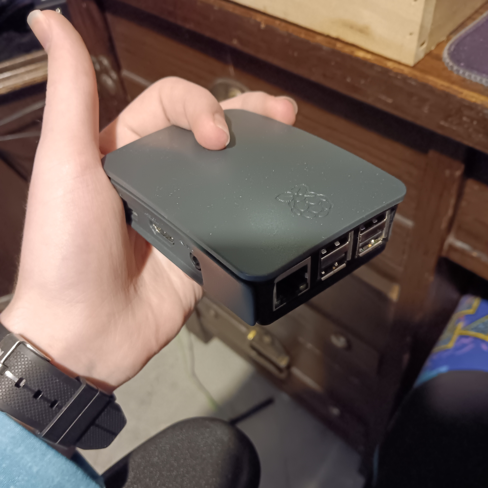

Raspberry pi synthesizer

summary
Uses a Raspberry Pi 3 to run an AM synth and control
it with MIDI input
background
starting out
I first got the idea to do this with an arduino. My goal was simple,
that I wanted to be able to take my Akai MPK mini and just play it
wherever without needing a PC and music software, just a charged
speaker and a keyboard. I was also planning to experiment with
reading output from a PS2 game glove to control the app, but
I could never get it to actually read anything even after
quadruple checking the pinouts and using about 20 different libraries.
Oh well, keyboards are still cool.
pi stuff
It proved
very quickly to be impossible after learning how USB worked and that
you can't just plug devices into eachother. So, new plan, I took out
a Raspberry Pi (which was very graciously donated by a friend of mine)
and installed a basic app I found labeled "amsynth". After a quick
search of how to connect a USB driver and actually use it with the app,
I finally got it to play sounds! I could hit a key, and something would
come out. In terms of the speaker, I just plugged in a small bluetooth
speaker that had an aux port and set it as the pi's main output.
After that, I had a bit of fun trying to find out how to autorun an app
on linux, which took about an hour for some reason since two of the autorun
methods didn't work at all, but after that I got it to just run a python
script which in turn started up the whole system and connected the keyboard.
zynthian
The approach of using an entire desktop to run one app felt kind of
off, so I went ahead and looked around for better solutions. It turned
out that there was an entire operating system, named Zynthian, which
was engineered for the exact purpose I was looking for - but it was
intended to be used with the rest of its kit, which included a couple knobs.
I installed it anyways, and after a couple boot loops it got itself working
(don't ask me how) and I spent about 2 hours trying to understand the
interface. Unlike amsynth, which allowed me to just right click and set a
knob to change a parameter, Zynthian had a huge complicated system of
using hotkeys and manually assigning midi channels. This wasn't the only
complicated part; I couldn't even figure out how to get presets working
(which I had no issue with on amsynth.) My bank switches didn't work(which
is what I had used before to quickly select presets) and a lot of
random buttons affected things they weren't supposed to, so in the end
I just reverted back to running piOS with amsynth.
conclusion
At the time of writing this, it still works, however I've realized that
a laptop really isn't that big of a hassle to bring around and thus
haven't used the pi system much lately. It's still fun to go back and pull it out
whenever I have friends by but for the most part this whole endeavor has
been a lesson that possibly one of the best things you can do in improvising
is to consider what is and isn't worth your time.